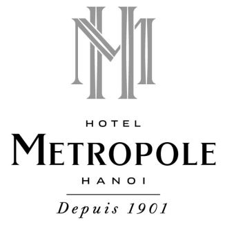

Welcome to Sofitel Legend Metropole Hanoi
Gioi thieu
Kể từ năm 1901, Khách sạn Metropole Hà Nội đã nổi tiếng là nơi gặp gỡ quen thuộc của khách thương gia cũng như
khách du lịch. Chúng tôi từng vinh dự đón tiếp các nhà soạn kịch, các diễn viên gạo cội, các đại sứ và nguyên
thủ quốc gia từ khắp nơi trên thế giới.
Lich su
Sofitel Legend Metropole Hà Nội được mở cửa lần đầu vào những năm đầu của thế kỷ XX bởi hai nhà đầu tư độc lập
người Pháp. Trải qua thử thách của thời gian, khách sạn luôn được coi là một biểu tượng mang tính lịch sử của Hà
Nội.
Ngày 1/7/2009, Khách sạn Metropole Hà Nội trở thành khách sạn Sofitel Legend đầu tiên trên thế giới, tạo tiền đề
cho bộ sưu tập các khách sạn xứng đáng là những công trình kiến trúc di sản cấp quốc gia tại những thành phố
mang tính biểu tượng trên thế giới.
Tim hieu them
